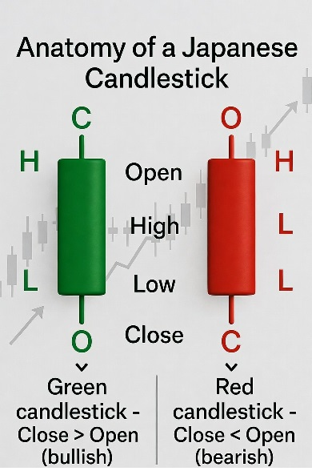
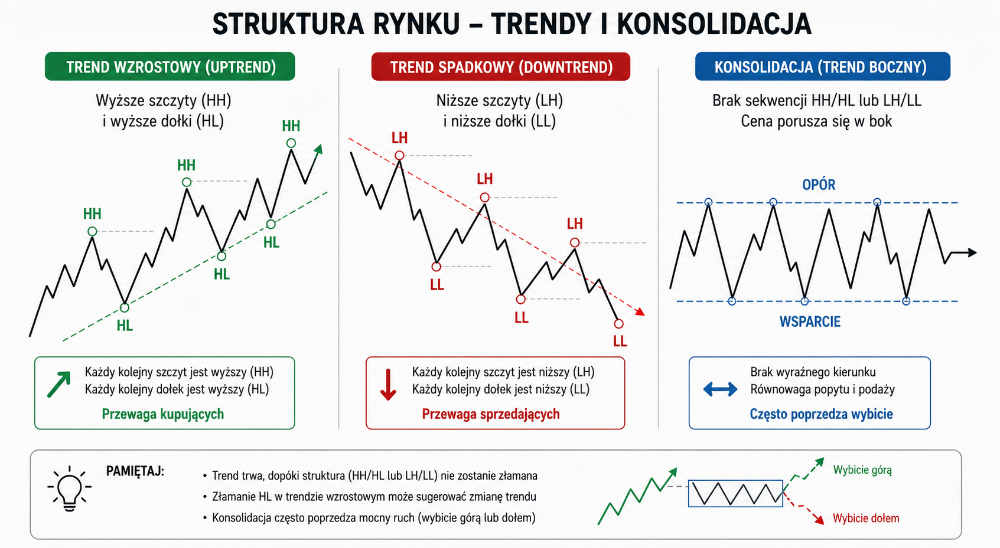

🌱 Moduł 0: Zanim klikniesz „kupno”
📘 Czym jest giełda futures?
Handlujesz kontraktami na cenę BTC, nie prawdziwym Bitcoinem. Możesz zarabiać na wzrostach (LONG) i spadkach (SHORT).
💣 Dźwignia x100 – broń obosieczna
Kontrolujesz pozycję 100× większą niż depozyt. Ruch ceny o 0.5% w złą stronę = utrata całego depozytu (likwidacja).
🕯️ Świeca OHLC – podstawowa jednostka informacji
Open (otwarcie), High (maksimum), Low (minimum), Close (zamknięcie).

🕯️ Zielona: Close > Open (bycza). Czerwona: Close < Open (niedźwiedzia).
🧮 Kalkulator wielkości pozycji
To Twoje najważniejsze narzędzie – używaj go przed KAŻDĄ transakcją.
✅ Checklista M0
📊 Moduł 1: Price Action – język rynku
📈 Trend – Twój pierwszy przyjaciel
Wzrostowy: wyższe szczyty (HH) i wyższe dołki (HL). Spadkowy: niższe szczyty (LH) i niższe dołki (LL).

📊 Wzrostowy: HH + HL. Spadkowy: LH + LL. Konsolidacja: ruch boczny.
📏 Wsparcie i opór (S/R)
Poziomy, gdzie cena historycznie zawracała. Szukaj na poprzednich szczytach/dołkach, okrągłych liczbach, wczorajszym high/low.
Wykres 5M z kilkoma poziomymi liniami S/R. Pokaż flip – opór staje się wsparciem.
🎮 Ćwiczenie: rysowanie S/R
Na poniższym wykresie przeciągnij myszką, by narysować poziome linie wsparcia i oporu. Kliknij „Pokaż przykładowe", żeby zobaczyć propozycję.
📐 Linie trendu
Rysuj po minimum dwóch punktach styczności. Trzeci punkt to potencjalna reakcja. Nie naginaj linii na siłę.
🎮 Ćwiczenie decyzyjne
Trend 15M wzrostowy, cena dotyka wsparcia 62 000. Pojawia się bycza świeca. Co robisz?
✅ Checklista M1
🕯️ Moduł 2: Formacje świecowe
Pojedyncze formacje
Młotek, shooting star, objęcie, doji, marubozu – każda z podpisem.
🔄 Objęcie (Engulfing)
Jedna świeca całkowicie pochłania poprzednią. Sygnał silnej zmiany momentum – ale tylko na poziomie S/R.
🎮 Ćwiczenie
Na oporze 65 000 pojawia się świeca z długim górnym cieniem. Co to za formacja?
✅ Checklista M2
💥 Moduł 3: Breakout i retesty
Wybicie konsolidacji
Cena opuszcza zakres boczny. Wejście dopiero po retescie wybitego poziomu – to Twoje potwierdzenie.
Konsolidacja, wybicie górą, powrót do poziomu (retest) jako wsparcie – strzałka wejścia.
⚠️ Fałszywe wybicia
Cena przebija poziom i natychmiast wraca. To tzw. fakeout – nie daj się złapać.
✅ Checklista M3
🧹 Moduł 4: Liquidity Sweeps
Polowanie na stop lossy
Rynek celowo przebija oczywiste minima/maksima, zbiera zlecenia SL drobnicy i gwałtownie zawraca.
Przebicie dołka z długim dolnym cieniem, szybki powrót i zamknięcie powyżej poziomu.
🎮 Ćwiczenie
Cena spada poniżej sesyjnego minimum, pin bar wraca powyżej. Co to?
✅ Checklista M4
🧱 Moduł 5: Order Blocks
Ślady instytucji
OB to ostatnia przeciwna świeca przed silnym impulsem. Np. przed spadkiem – ostatnia zielona świeca to niedźwiedzi OB.
Byczy OB (czerwona świeca przed zielonym impulsem) i niedźwiedzi OB (zielona przed czerwonym).
✅ Checklista M5
🌀 Moduł 6: Fair Value Gaps
Luka, która działa jak magnes
FVG to przestrzeń między high jednej świecy a low trzeciej (przy 3-świecowej sekwencji impulsu). Cena często wypełnia tę lukę.
Trzy świece – między high 1 a low 3 widoczna przerwa. Zaznacz strefę FVG.
✅ Checklista M6
📐 Moduł 7: Fibonacci
Złote proporcje rynku
Poziomy 0.5, 0.618 i 0.786 to miejsca, gdzie cena często zawraca w korekcie. Używaj ich razem z OB i FVG.
Wykres z siatką Fibo od dołka do szczytu impulsu. Zaznacz poziom 0.618 przy OB.
✅ Checklista M7
🌊 Moduł 8: Fale Elliotta
Rytm rynku
5 fal impulsu + 3 korekty. Fala 3 jest najsilniejsza i najlepsza do scalpingu. Fala 4 nie może wejść w obszar fali 1.
Schemat impulsu (1-2-3-4-5) i korekty (A-B-C). Fala 3 oznaczona jako najdłuższa.
✅ Checklista M8
📈 Moduł 9: EMA i Stochastic
EMA 9 i 21 – filtr trendu
Używaj tylko jako sito: cena > EMA9 > EMA21 = trend wzrostowy. Nie wchodź na podstawie samych EMA.
📉 Stochastic – dywergencje
Ukryta bycza dywergencja: cena robi wyższy dołek, oscylator niższy → kontynuacja trendu. Regularna: ostrzeżenie przed odwróceniem.
Wykres z nałożonym Stochastic (14,3,3). Zaznacz ukrytą dywergencję byczą.
✅ Checklista M9
📊 Moduł 10: Volume at Price
Gdzie handlowano najwięcej?
HVN (High Volume Node) = dużo transakcji → silne S/R. LVN (Low Volume Node) = mało transakcji → cena przelatuje szybko (dobre cele TP).
Profil wolumenu po prawej stronie wykresu. Oznacz HVN i LVN.
✅ Checklista M10
🔺 Moduł 11: Wedges (kliny)
Formacje końca ruchu
Klin zwyżkujący (w trendzie spadkowym) i zniżkujący (w trendzie wzrostowym) zapowiadają kontynuację po wybiciu.
Klin kończący – linie trendu zbiegają się. Wybicie dołem z strzałką.
✅ Checklista M11
🧘 Moduł 12: Psychologia i zarządzanie ryzykiem
😰 FOMO
Widzisz ruch, nie masz pozycji, wchodzisz bez planu. Antidotum: Zawsze będzie następna transakcja. Spokojnie.
😡 Zemsta na rynku
Po stracie zwiększasz pozycję, żeby się odegrać. Zasada: po 2 stratach – 1 godzina przerwy.
🤑 Chciwość i przesuwanie SL
Nigdy nie odsuwaj SL od ceny. Możesz go tylko zacieśniać.
🧘 Ćwiczenie oddechowe przed transakcją
📋 Żelazne zasady (wydrukuj!)
- Kalkulator przed każdą transakcją
- Stop loss ZAWSZE
- Max 1% ryzyka na transakcję
- Min. 3 potwierdzenia
- Po 2 stratach – przerwa
- Dzienny limit strat: 3% konta
✅ Checklista M12
🏦 Moduł 13: Od kursu do giełdy
1. Konto demo
Załóż konto na Bybit Testnet lub Binance Testnet. Ćwicz minimum 3 miesiące.
2. Isolated Margin
Zawsze używaj Isolated, nigdy Cross. Ryzykujesz tylko to, co przypiszesz do pozycji.
Zrzut ekranu z konta demo – gdzie ustawić isolated margin i dźwignię.
3. Zlecenie z SL i TP
Ustaw SL i TP przed otwarciem pozycji. W polach „Take Profit" i „Stop Loss" wpisz ceny z kalkulatora.
Okno zlecenia z zaznaczonymi polami SL i TP.
4. Funding rate
Opłata między longerami a shorterami co 8h. Dla skalpera zwykle bez znaczenia – ale sprawdź.